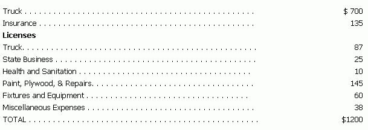
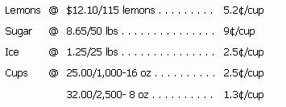
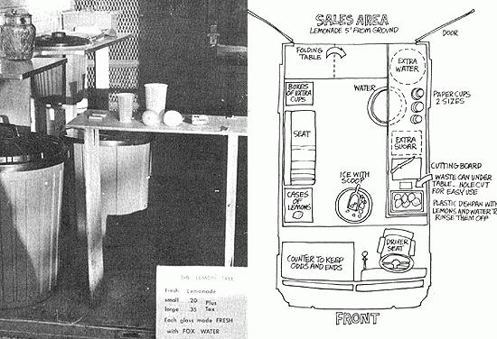
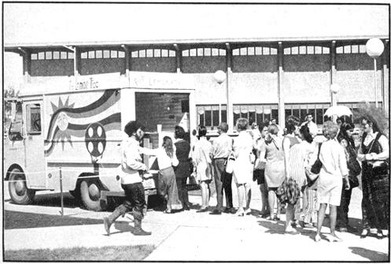

Two of us decided to start an Alaskan lemonade business after reading "An Ideal Fun Way For A Commune To Make Heavy Bread" in MOTHER NO. 3 . . . and an ad for a Government Services Administration spot-bid sale of used mail trucks. What we did was pay Uncle Sam $700 for a 1965 Dodge one-ton U.S. Mail truck and then spend another $500 (I don't know where the whole $1200 came from!) painting and outfitting the van to transform it into a roving lemonade stand.
Our expenses were:
OUTFITTING THE VAN
We painted the outside of the van ourselves with two coats of bright yellow Plastinamel. Then a friend-Mark Nolden-blocked out the rainbow, sun and lemon tree designs on each side with masking tape and newspaper and spray painted them. We made the bumpers green.
The "Lemon Tree" and "Fresh Lemonade" signs across the top of the van are 3/8" plywood painted yellow with black enamel lettering. Two are eight feet long and two are six feet. Each sign is fastened to the truck body with sheet metal screws and reinforced with 2 x 4's across the top.
Inside, our van has new plywood floors and walls painted with white enamel to make them attractive and easy to clean. A work table (an 18" wide 3/4" plywood top mounted on 2 x 4's) runs the length of one side and a serving table (3/8" plywood on 3/4" plywood legs) across the back is designed to fold out of the way for loading and unloading. Both work surfaces are painted with a couple thick coats of plastic-enamel and trimmed with sanitary-looking metal stripping.
If you're considering this or any other business that requires selling out of a van or truck, get one with enough headroom. Ours has a working area of 6' x 8' and is 6' high.
THE OPERATION
We obtain our water from a state-owned spring 10 miles from our home. It costs us $1.00 worth of gas (gasoline is 50 cents a gallon in Alaska) for 40 gallons of some of the finest water in the state . . . but it's worth it. We advertise our spring water and it helps business.
Our spring water is stored in new plastic garbage barrels and we dip it out with an old lemonade pitcher (our original idea, a hand pump, rusted and didn't work). We use one-quart glass shakers with plastic snap-on tops (treat these with care . . . they break!) for mixers. Cups, a lemon squeezer, lemons, sugar, water and ice round out our supplies. Here's a breakdown of our operational goods:
To make a frothy, refreshing lemonade we first scoop up 16 ounces of ice in a shaker (fill the shaker half full). Then we cut the ends off a lemon and slice the tangy fruit into eight pieces, squeeze them with our squeezer and pour the juice into the container of ice. We next add a quarter-cup of sugar, fill the beaker with water, cover and shake well. The finished drink is served in a cup.
We sell the eight-ounce cups for 20 cents and the 16-ouncers for 35 cents . Every night we figure out how many servings we sold, what they cost (prices will vary somewhat from day to day due to melting ice, fluctuations in lemon costs, etc.) and how much gross profit is left over. Fifty percent of that excess goes to the person who is selling (or two people, a driver/money-changer and the lemonade maker) and 50% pays off the investment.
There were a few hassles with city officials in the beginning (that held us up for about three weeks from the time we bought the truck until we sold our first cold drink), but we straightened them out. Our biggest current hassle is a 2 cents-per-glass sales tax. I don't know about future tax problems, but-in the best tradition of American business-we're figuring on as many loopholes as possible.
There are only about 25,000 people in the Fairbanks area so we work a little differently than the plan outlined in MOTHER NO. 3. Mostly, we drive around the residential sections at right and on weekends and cover the business area during the day. We vary the route to take advantage of any activity that draws a crowd: baseball and Little League games; motorcycle, boat and drag races; downtown at lunchtime; construction sites during coffee breaks (working people really dig lemonade instead of coffee all the time); university campuses; organization tion picnics; fairs. Check with your local Chamber of Commerce for other ideas. Most localities have a summer festival (ours called Golden Days) that it will pay you to attend.
OUR SIDE OF THE STORY
We missed the first month of good warm weather (Alas doesn't have a whole lot of that kind) and the late start hurt us financially . . . but, finally-one cool and windy night-we drove to the University and sold lemonade at a free outside concert. We squeezed lemons, dipped water, shook pitchers . and sold $22 worth of lemonade. We were on our way!
For the next couple of weeks we trucked around town with a soft bell until we got permission to sell on campus. Each morning after that (or afternoon, if we slept late) we parked at the University for the day and peddled our wares. Sometimes we toured the city and cut into the ice cream trucks' business a little (parents like the idea of nutritious, fresh lemonade better than ice milk-and-syrup preparations). We take longer to cover an area than the ice cream people, however, so we aren't any real competition.
When we're selling on the run, we work out of the front windows (they're big but the customers can't watch us mix the drinks too well). We like it better when we park, slide the door up - it covers the whole back end of the van - and sell off the serving table so that everyone can see us operate.
We didn't peddle any lemonade at all for a week or two when there were forest fires in our area and Andy went out to fight them while I drove the firefighters around in school buses (we made a lot of our summer money that way). We stopped selling again the first week in August when temperatures began regularly dropping below 60° F . . . and opened a week later at the State Fair with a booth (we sold sandwiches and cigarettes, too) alongside The Lemon Tree. The State Fair space cost us $100 plus 15% of our gross sales.
Our biggest boost was the free publicity we got as the media learned - and then spread the word - about our fresh and natural drink. The papers in the area all did stories on us and KFAR-TV filmed us and put us on the news. Exposure like that can really help.
At the end of the summer our books showed $2.400 worth of sales for 32 days (17 "good ones" and 15 short and/or "bad ones") work. Average daily sales were $80 for three to seven hours of selling and one to three hours with the books and arrangements.
We spent a total of $1,850: $1,300 on ice, lemons and sugar; $150 on gas and other auto expenses; $300 for fair space and one-quarter of our rent (our "office" - the tax benefits are nice when you own your own business - I recommend Dome Simplified Weekly Bookkeeping Record for ideas and a fantastic way to figure out how the money travels); and $100 for other expenses.
No, we didn't make any heavy bread. One of the reasons was our late start and another was our location. An Alaskan summer is nice and warm with long daylight hours . . . but it's also the shortest season here. Nights are cool and the first snow sometimes comes (as it did last year) on Labor Day.
We do own a truck now though, and people want us back this year. We know what we did wrong and, perhaps, what we can do right the next time around.
I may have another truck and a stand at "Alaskaland" this coming season, I'm looking for a natural sweetener to replace sugar and I've found a place that'll air-freight fresh organic lemons to Alaska! We know we can pick up extra bucks selling other things, too . . . we went through 30 loaves of homemade bread in one day when we sold sandwiches at a university picnic. We'd like to try snow cones (a mix of fresh lemon juice, water and sugar over crushed ice) and, later, snow-creme cones (a scoop of vanilla ice cream inside a snow cone).
In closing, I'd recommend this business to anyone. If it worked at all here it should really pay off for a person in a warmer climate. We didn't get rich our first time out but we met many good people and got a lot of vitamin C while having a good time. Operating our own stand was a helluva lot better than working for someone else . . . and we don't figure we ripped anybody off because we made a damn righteous glass of lemonade!
|
 |
 |
 |
|
 |
|
|